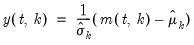
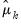
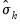
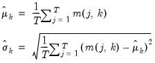

@colstdizep Matrix Utility Standardize each column using the population (non-d.f. corrected) standard deviation. Syntax: @colstdizep(m) m: matrix, vector Return: matrix, vector Returns the matrix containing the results from standardizing each column of m. For each element of the output:  for  the mean and  the population (non-d.f. corrected) standard deviation of column where  (18.3) where is the number of non-missing values in the column. If there are missing values in a column, they are ignored and the number of rows is adjusted. Examples matrix m1 = @mnrnd(50, 4) matrix m1s = @colstdizep(m1) standardizes each column of M1 and places the results in M1D. Cross-references See also @colstdize, @stdize, @stdizep, and @coldemean.


 where
where is the number of non-missing values in the column. If there are missing values in a column, they are ignored and the number of rows is adjusted.
is the number of non-missing values in the column. If there are missing values in a column, they are ignored and the number of rows is adjusted.